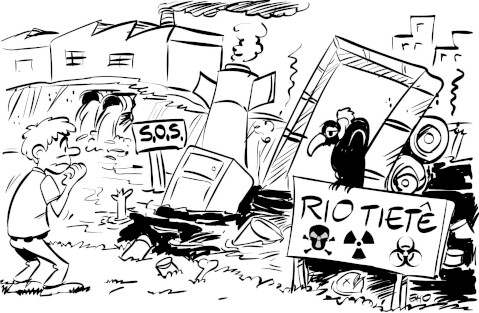
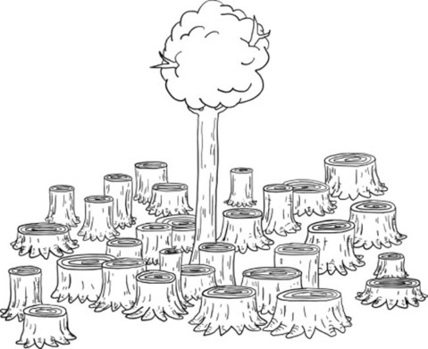
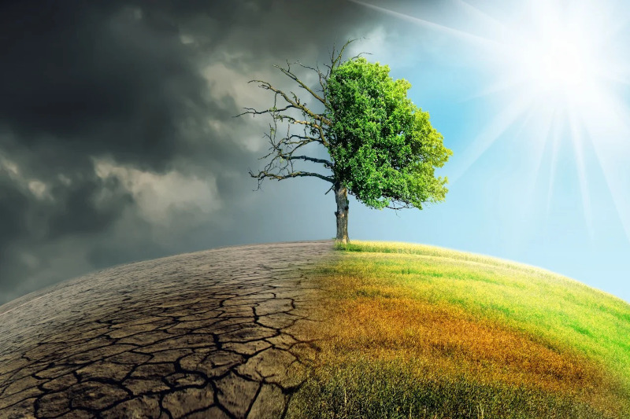
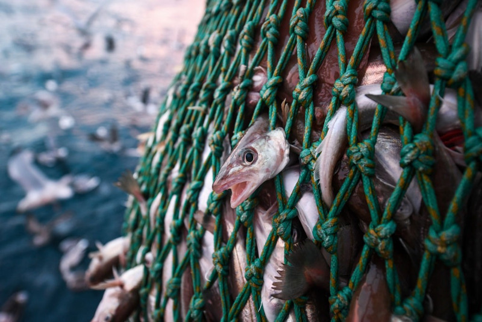
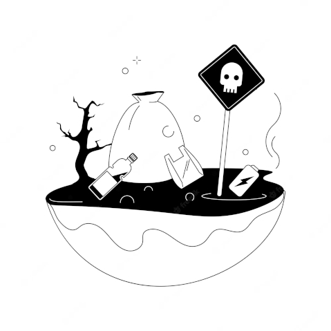

Importância da preservação da natureza
A preservação da natureza é essencial para garantir um futuro saudável para o nosso planeta e todas as formas de vida que o habitam. Sem a natureza, não haveria ar fresco para respirar, água limpa para beber ou alimentos para comer. Além disso, a natureza é uma fonte de inspiração para muitas formas de arte, cultura e espiritualidade, tornando-a uma parte essencial de nossas vidas.
Infelizmente, a atividade humana, incluindo a poluição, a destruição de habitats naturais e a mudança climática, estão ameaçando a saúde da natureza em todo o mundo. Isso não apenas coloca em risco muitas espécies animais e vegetais, mas também a nossa própria sobrevivência. É hora de começarmos a fazer a nossa parte para preservar a natureza, antes que seja tarde demais.
Preservar a natureza é um esforço coletivo que pode ser alcançado por meio de pequenas ações diárias. Podemos começar por reduzir o uso de plásticos e reciclar, plantar árvores e apoiar iniciativas de conservação da natureza em nossas comunidades. Cada ação conta e juntos podemos garantir um futuro melhor para todos os seres vivos do nosso planeta.
Ações humanas que afetam negativamente a natureza
Poluição do ar, água e solo
A poluição do ar ocorre quando substâncias químicas tóxicas são liberadas na atmosfera, afetando a qualidade do ar que respiramos. Essas substâncias podem ser emitidas por veículos, indústrias e fontes de energia. A poluição do ar pode causar problemas de saúde, como asma e doenças respiratórias, além de afetar a flora e fauna, reduzindo a biodiversidade e afetando os ecossistemas.
A poluição da água ocorre quando produtos químicos, resíduos e outras substâncias são despejadas em rios, lagos e oceanos. Essas substâncias afetam a qualidade da água e podem matar a vida aquática. Além disso, a poluição da água também pode afetar os seres humanos, uma vez que muitas comunidades dependem de rios e lagos para sua água potável.
A poluição do solo é causada por práticas agrícolas intensivas, mineração, desmatamento e outras atividades humanas. Essas práticas podem levar à contaminação do solo com produtos químicos tóxicos, reduzindo sua fertilidade e afetando o crescimento de plantas e a saúde do solo. Além disso, a poluição do solo também pode afetar a qualidade da água, uma vez que muitas substâncias químicas podem vazar do solo para os corpos de água subterrâneos.
Em resumo, a poluição do ar, água e solo pode causar danos irreversíveis ao meio ambiente, afetando a biodiversidade, a saúde humana e a qualidade de vida de muitas comunidades. É crucial que sejam tomadas medidas para reduzir a poluição em todas as suas formas, incluindo ações como regulamentações ambientais, tecnologias limpas e mudanças nos padrões de consumo e produção.
Desmatamento e destruição de habitats naturais
O desmatamento e a destruição de habitats naturais são algumas das principais ameaças ao meio ambiente e à biodiversidade em todo o mundo. As florestas são habitats vitais para uma grande variedade de espécies animais e vegetais, e sua destruição tem impactos profundos em toda a cadeia alimentar e nos ecossistemas em que eles existem.
A perda de florestas tem efeitos significativos no clima global, uma vez que as árvores absorvem dióxido de carbono (CO2) da atmosfera e o transformam em oxigênio através da fotossíntese. Quando as florestas são destruídas, o a é liberado novamente na atmosfera, contribuindo para o aumento do efeito estufa e das mudanças climáticas.
Além disso, a destruição de habitats naturais pode ter efeitos devastadores sobre a biodiversidade, incluindo a perda de espécies animais e vegetais únicas e até mesmo a extinção em alguns casos. Muitas espécies dependem de habitats específicos para sobreviver, e a destruição desses habitats pode colocá-las em risco de desaparecer completamente.
A destruição de habitats naturais também tem efeitos significativos em comunidades humanas que dependem desses recursos para sua subsistência. Muitas comunidades locais dependem da pesca, caça e coleta de recursos naturais para sobreviver, e a destruição desses habitats pode afetar sua capacidade de atender às suas necessidades básicas.
Em resumo, a destruição de habitats naturais e o desmatamento têm impactos profundos em todo o meio ambiente, afetando a biodiversidade, o clima global e a capacidade das comunidades locais de se sustentarem. É fundamental que medidas sejam tomadas para proteger e conservar esses habitats naturais, incluindo ações como a criação de áreas protegidas, a implementação de regulamentações ambientais e a promoção de práticas de consumo e produção sustentáveis.
Mudanças climáticas
As mudanças climáticas são um dos maiores desafios enfrentados pelo meio ambiente atualmente. Elas são causadas pela liberação de gases de efeito estufa na atmosfera, principalmente dióxido de carbono (CO2) resultante da queima de combustíveis fósseis como carvão, petróleo e gás natural. Esses gases retêm o calor na atmosfera, levando a um aumento da temperatura global.
As mudanças climáticas têm impactos profundos em todo o meio ambiente, incluindo a biodiversidade, os ecossistemas e as comunidades humanas que dependem desses recursos naturais para sobreviver. Uma das principais consequências é o aumento do derretimento do gelo nos polos e em glaciares, o que pode levar ao aumento do nível do mar e à inundação de áreas costeiras.
Além disso, as mudanças climáticas podem causar condições meteorológicas extremas, como ondas de calor, tempestades mais intensas e secas prolongadas, afetando a disponibilidade de água doce e ameaçando a segurança alimentar. As mudanças climáticas também podem afetar a distribuição geográfica das espécies, levando a migrações e até mesmo à extinção em alguns casos.
Outro impacto importante das mudanças climáticas é a acidificação dos oceanos, que pode ter efeitos graves sobre a biodiversidade marinha e as comunidades humanas que dependem desses recursos para sua subsistência.
Em resumo, as mudanças climáticas têm impactos profundos em todo o meio ambiente, incluindo a biodiversidade, os ecossistemas e as comunidades humanas. É fundamental que medidas sejam tomadas para reduzir as emissões de gases de efeito estufa e adaptar-se às mudanças climáticas já em andamento, incluindo a implementação de políticas públicas, investimentos em tecnologias mais limpas e ações individuais para reduzir o consumo de recursos naturais e promover a sustentabilidade.
Sobrepesca e exploração excessiva de recursos naturais
A sobrepesca e exploração excessiva de recursos naturais são graves problemas que afetam o meio ambiente. A pesca excessiva, por exemplo, pode levar à diminuição da população de espécies de peixes e outros animais marinhos, afetando toda a cadeia alimentar e a biodiversidade dos oceanos.
Além disso, a pesca destrutiva, como a pesca com redes de arrasto, pode causar danos físicos aos ecossistemas marinhos, destruindo corais e outros habitats importantes para a sobrevivência de diversas espécies.
A exploração excessiva de recursos naturais também pode levar à degradação do solo e de ecossistemas terrestres. A mineração, por exemplo, pode causar poluição de rios e solos, além de desmatamento e perda de biodiversidade.
A exploração excessiva de recursos hídricos, como rios e aquíferos, pode levar à escassez de água potável e afetar a biodiversidade aquática, além de comprometer a capacidade dos ecossistemas em fornecer serviços ecossistêmicos, como regulação climática e controle de enchentes.
Em resumo, a sobrepesca e exploração excessiva de recursos naturais têm impactos negativos profundos em todo o meio ambiente, incluindo a biodiversidade, os ecossistemas e as comunidades humanas. É fundamental que sejam tomadas medidas para proteger e gerenciar de forma sustentável os recursos naturais, incluindo a implementação de políticas públicas, regulamentações e práticas de manejo responsável, além do desenvolvimento de alternativas econômicas e tecnológicas mais sustentáveis.
Uso de produtos tóxicos
O uso de produtos tóxicos tem um grande impacto negativo no meio ambiente. Isso inclui desde a utilização de pesticidas na agricultura até a produção de resíduos químicos pela indústria.
Os pesticidas, por exemplo, são utilizados para controlar pragas e doenças em cultivos agrícolas. No entanto, muitos desses produtos são altamente tóxicos e podem contaminar o solo, a água e o ar, afetando a biodiversidade e a saúde humana.
A indústria também produz uma grande quantidade de resíduos tóxicos, incluindo produtos químicos, metais pesados e outras substâncias perigosas. Muitas dessas substâncias podem persistir no meio ambiente por anos, contaminando o solo e a água, e afetando a biodiversidade e a saúde humana.
Além disso, muitos produtos de uso comum em nossas casas, como produtos de limpeza e cosméticos, contêm substâncias tóxicas que podem poluir o meio ambiente quando descartados incorretamente.
Em resumo, o uso de produtos tóxicos tem um impacto negativo significativo no meio ambiente, afetando a biodiversidade, a saúde humana e comprometendo a capacidade dos ecossistemas de fornecer serviços ecossistêmicos. É importante adotar práticas de consumo e produção mais sustentáveis, incluindo a escolha de produtos mais seguros e a gestão adequada dos resíduos químicos, a fim de minimizar esses impactos negativos.